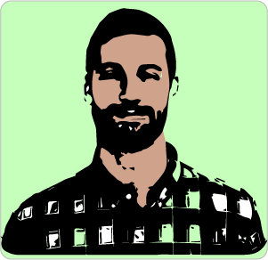

In the spring of 2016, I finished a Masters in Geography and a graduate GIS certificate program at The George Washington University focusing on GIS and programming . Over the course of these studies I acquired a variety of geospatial skills and a holistic perspective towards addressing environmental issues around the world. Getting a Masters in Geography has allowed me to study across disciplines to develop solutions, create unique visualisations, and analyze complex patterns for many different problems.
Using knowledge that I gained during this two year program and various internships, I would like to apply advanced GIS techniques and expertise to an organization that hires employees in the geospatial field. Additionally, I would like to further develop my well rounded understanding of GIS techniques in fields such as programming for geospatial applications, remote sensing, and web application development.
Currently living in Washington, D.C. working as a Jr. GIS Analyst at Casey Trees.
Actively looking for new opportunities!
Things I know about:
-Programming languages (Python, JavaScript, SQL, HTML, CSS)
-Software (ArcGIS, QGIS, Mapbox, CartoDB, Adobe Illustrator, MS Office)
-
-Database Management (Postgres, Access, SQLite3)
-Version control( Git/Github)
-Remote Sensing (ERDAS)
-Project Management
-Public Speaking